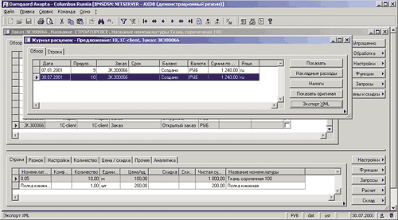
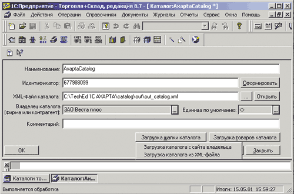
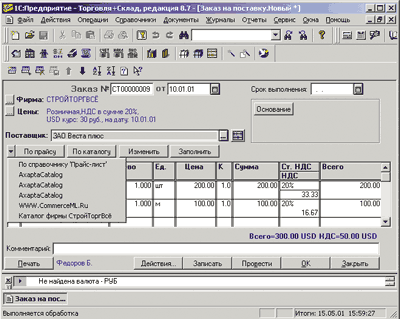
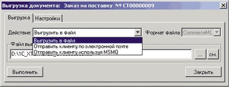
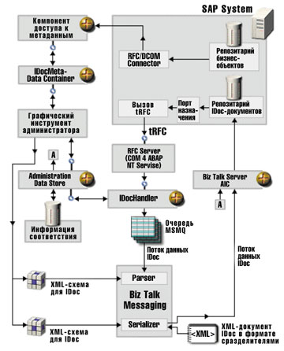

Дмитрий Старостин
Специалист по разработке программных систем московского представительства Microsoft
dmitrys@microsoft.com
Современный уровень автоматизации предприятий характеризуется разнообразием используемых приложений и технологий. Комплексные системы управления предприятием, призванные автоматизировать основные бизнес-процессы компании, в реальной жизни попадают в окружение приложений, решающих задачи вертикальной специализации. Распределенные, иерархические бизнес-структуры используют разные системы автоматизации в различных подразделениях и на различных организационных уровнях. Желание сохранить инвестиции при развитии информационных систем заставляет компании идти по пути постепенного охвата автоматизацией, выбирая на рынке приложения и модули, наиболее полно удовлетворяющие их потребностям.
С проникновением информационных систем на все уровни предприятия, автоматизацией все большего числа внутренних и внешних бизнес-процессов, возрастанием объема обрабатываемой информации растет и потребность во все более тесной интеграции приложений на систематической основе. Практически любое приложение автоматизации бизнес-деятельности содержит интерфейсы взаимодействия с другими приложениями. Но, пожалуй, только в последние несколько лет мы видим стремление производителей выйти за уровень импорта/экспорта данных и помочь пользователям в построении гетерогенных информационных систем. Огромную роль в этом процессе играют усилия ИТ-индустрии по стандартизации и прежде всего принятие консорциумом W3C стандарта XML.
Уровни интеграции приложений
По степени абстракции от уровня хранения данных условно можно выделить три уровня интерфейсов интеграции приложения.
Низкий уровень
В этом случае обеспечивается доступ к информации на уровне структур хранения данных используемого приложением хранилища. Для извлечения и записи данных используются такие интерфейсы доступа к данным, как ADO,ODBC и языки структурных запросов к реляционным источникам. Помимо того, что реализация такого подхода трудоемка, зачастую трудно учитывать воздействие уровня бизнес-логики приложения (если только она не реализована полностью на уровне данных - в виде триггеров, хранимых процедур и т.д.). Это, в свою очередь, может приводить к нарушению логики действия взаимодействующих приложений. При таком подходе обычно велики затраты на разработку, внесение изменений и сопровождение - в силу сильной зависимости от структуры хранения данных. Средства автоматизации доступа к данным на уровне реляционных источников, такие как DTS (Data Transformation Services) в составе Microsoft SQL Server, предназначены для облегчения ситуации, но они не меняют ее коренным образом.
Средний уровень
Обеспечивается доступ к информации и уровню бизнес-логики приложения через выделенные интерфейсы приложения. К этой группе можно отнести типы интерфейсов от отдельных утилит экспорта/импорта информации до вызовов методов объектов уровня бизнес-логики через стандартные механизмы взаимодействия приложений. В подавляющем большинстве бизнес-приложений механизм взаимодействия с иерархией объектов уровня бизнес-логики через COM/DCOM широко применяется не только для доступа к информации, но и обеспечивает возможность выполнения функций приложения из внешних систем. Возможность доступа через COM-TI (COM Transaction Integrator), который входит в состав Microsoft Host Integration Server, позволяет взаимодействовать через COM-интерфейс с приложениями на мэйнфреймах.
Такие системы надежного асинхронного обмена сообщениями между приложениями, как Microsoft Message Queue (MSMQ), играют роль транспорта при взаимодействии приложений в слабо связанном окружении. В этом смысле MSMQ можно рассматривать как "электронную почту для приложений", обеспечивающую возможности транзакционной, асинхронной доставки сообщений.
Высокий уровень
В данном случае интерфейсы приложений позволяют обращаться к информации не на уровне атомарных данных, а на уровне бизнес-документов, использующихся в конкретных бизнес-процессах. Стандартизация самих документов позволяет организовать связи приложений с минимальными затратами на внедрение и поддержку.
Не касаясь причин этого в рамках данной статьи, отметим, что стандарты EDI (например, EDIFACT и X.12) не смогли сыграть доминирующую роль в области интеграции информационных систем и получили ограниченное распространение как форматы для обмена данными между бизнес-партнерами, исключая внутрикорпоративные взаимодействия.
Необходимость унификации бизнес-документов на всех этапах бизнес-процессов, включая внутрикорпоративные взаимодействия, вызвала новую волну усилий по стандартизации на основе XML как формата обмена данными.
Именно на этом уровне взаимодействия можно эффективно использовать ПО промежуточного слоя, например Microsoft BizTalk Server 2000, помогающее на систематической основе решать повторяющиеся задачи построения интеграционных связей между приложениями.
Возможности Microsoft BizTalk Server
Давайте посмотрим, какие инфраструктуру и инструменты, ориентированные на решение задач интеграции, управления и автоматизации бизнес-процессов, предлагает BizTalk Server.
BizTalk Server 2000 Messaging, предназначенный для организации взаимосвязей приложений на уровне точка-точка, обрабатывает документы таких основных типов форматов данных, как XML, EDIFACT, X.12 и формат плоского файла. Будучи нейтральным протоколом, BizTalk Server имеет интерфейсы для взаимодействия через следующие протоколы: HTTP, COM/DCOM, SMTP, MSMQ, FTP. BizTalk Server 2000 Messaging решает задачи не только преобразования бизнес-документов из одного типа форматов данных в другой и маршрутизации между различными транспортными протоколами передачи сообщений, но и задачи преобразования содержимого, понимаемого различными приложениями, шифрования, цифровой подписи, подтверждения доставки и другие.
BizTalk Server Orchestration предназначен для разработки и исполнения сценариев интеграции приложений в рамках единых бизнес-процессов. BizTalk Orchestration Designer позволяет бизнес-аналитику и разработчику в рамках единого графического инструмента работать над описанием и реализацией бизнес-сценария интеграции. Службы BizTalk Server Orchestration выполняют экземпляры бизнес-сценариев, обеспечивая поддержку транзакций, конкурентного выполнения, динамической адресации вызовов приложений, декомпозиции и т. д.
Готовность приложения к интеграции
Каким требованиям должно удовлетворять бизнес-приложение, готовое к включению во взаимодействие с другими приложениями в гетерогенной информационной системе предприятия на современном уровне автоматизации? Прежде всего отметим необходимость наличия интерфейсов для обмена стандартными бизнес-документами и интерфейсов автоматизации вызовов функций приложения из внешних систем. Фактически необходимое условие - возможность работы с документами в формате XML. Поддержка различных способов обмена сообщениями, таких как отправка сообщений через файл, MSMQ, интерфейс COM/DCOM, HTTP, SMTP и т. д., облегчает задачу включения приложения в исполняемые бизнес-процессы. Из других важных характеристик нужно назвать следующие:
- поддержка транзакций при взаимодействии через внешние интерфейсы;
- поддержка стандартов описания бизнес-документов, например CommerceML;
- репозитарий схем поддерживаемых документов и возможность описания дополнительных схем на основе внутренних метаданных приложения;
- поддержка реализации стандартных бизнес-процессов;
- средства поддержки, разработки и администрирования интеграционных бизнес-процессов.
Тесная интеграция с BizTalk Server 2000 позволяет приложению использовать и другие возможности, а именно:
- прямая отправка документов через COM-интерфейс BizTalk Server 2000;
- прием сообщений через COM-интерфейс из BizTalk Server - AIC (Application Integration Component);
- отслеживание документов в очередях BizTalk Server;
- доступ к каналам, портам, схемам документов и другим объектам в BizTalk Server.
Примеры
Рассмотрим с этой точки зрения некоторые приложения класса учетных систем и ERP-систем, широко распространенные на российском рынке. Оговоримся, что были выбраны системы, о механизмах интеграционных взаимодействий которых автор имеет представление. Данный ряд примеров не претендует на полноту и призван служить лишь иллюстрацией к обсуждаемой теме.
"1С:Предприятие"
"1С:Предприятие" имеет широкий набор интерфейсов для взаимодействия с внешними приложениями. Предоставляется возможность обращения через OLE Automation к внутренним объектам и функциям, доступным в скрипте "1С". Предусмотрена отправка сообщений через файл; e-mail (MAPI); HTTP/HTTPS. Прием сообщений по протоколам осуществляется через файл или e-mail (MAPI).
Поддерживаются различные типы форматов сообщений: от плоского файла CSV, применявшегося ранее для обмена справочниками между установками "1С", до XML-формата. В формате XML возможен экспорт/импорт как документов стандарта CommerceML, так и XML-документов других форматов (в том числе и внутренних справочников). Есть возможность в графическом интерфейсе соотносить схему документа с метаданными "1С". В скрипте "1С" поддерживается объект ( реализованный как оболочка MSXML Parser) для работы с XML-документами.
Дополнительно поддерживается формат взаимодействия с системами клиент-банк, разработанный компанией "1С" в сотрудничестве с ведущими поставщиками решений для банков.
Компании-франчайзи расширяют возможности базовой поставки "1С", в том числе и в плане интеграции. Одним их таких примеров может служить дополнительный модуль компании "Икс технологии" (http://www.xtek.ru) - v7Queue. С его помощью можно осуществлять обмен сообщениями через дополнительные транспортные протоколы - MSMQ, FTP, SMTP. Модуль осуществляет асинхронный прием сообщений из очередей MSMQ через стандартную процедуру ОбработкаВнешнегоСобытия в "1С". Компонент v7Queue содержит графический интерфейс для настройки параметров получения сообщений и программный интерфейс в скрипте "1С" для отправки и приема сообщений.
Navision Axapta
Компания Columbus IT Partner Russia (http://www.columbus.ru) поставляет отдельный модуль Galaxy, предназначенный для пакетного обмена с Axapta документами в форматах ASCII и EDIFACT. В нем поддерживаются следующие интерфейсы доступа/обмена данными - ODBC, FTP, Файл. В Galaxy входит ряд мастеров для организации миграции данных из системы "Конкорд" в Axapta.
Что касается непосредственно Axapta, то в нее включена поддержка XML при помощи отдельного класса-оболочки на внутреннем языке системы X++. Данный класс реализован на основе MSXML и поддерживает как DOM-, так и SAX-интерфейсы для работы с XML-документами.
Классы XMLDataExport/XMLDataImport реализуют экспорт/импорт данных на основе запросов SQL и используют возможности ADO и Microsoft SQL Server 2000 по представлению реляционных наборов в виде XML-документов.
Интересная особенность системы - наличие генератора класса на языке X++ на основе XML-схемы. Это дает разработчику возможность работать с XML-документом, обращаясь к свойствам и методам сгенерированного класса.
Построенная в трехуровневой архитектуре, Axapta содержит COM Connector, который инкапсулирует бизнес-логику, предоставляя внешним приложениям доступ к объектам системы. Он доступен из кода VBA и любой среды разработки, поддерживающей COM-интерфейсы. COM Connector служит основой для построения дополнительных клиентских приложений к Axapta силами корпоративных разработчиков.
Помимо COM, поддерживаются MSMQ и файл как протоколы обмена сообщениями.
Компания Columbus IT Partner Russia реализовала поддержку в формате CommerceML документов, описывающих наиболее распространенные торговые операции - формирование коммерческих предложений по каталогу, заказ товара, отпуск товара.
Обмен данными между "1С" и Axapta в формате CommerceML
Как организовать взаимодействие двух систем, поддерживающих обмен документами одного формата? Пусть в компании, обозначаемой как "Продавец", установлена Navision Axapta, а в компании, обозначаемой "Покупатель", работает "1С Предприятие". Рассмотрим часть цепочки документооборота при размещении заказа на покупку.
Продавец формирует каталог-предложение для Покупателя. В системе Axapta мы должны подготовить предложение, состоящее из списка товаров из общего каталога. С точки зрения интерфейса пользователя это эквивалентно созданию заказа. Обработанное предложение можно экспортировать в XML-формате в соответствии со схемой CommerceML. Документ можно сохранить в виде файла или отправить в очередь MSMQ.
|  |
| Рис. 1. Подготовка предложения в Axapta.
|
На стороне Покупателя мы должны импортировать каталог-предложение, создать заказ на покупку и отправить его в электронном виде Продавцу. "1С Предприятие" позволяет хранить множество каталогов от разных поставщиков. Через меню Справочники - Каталоги импортируем каталог. Отметим, что можно выбрать загрузку каталога с сайта поставщика по протоколу HTTP или просто из файла, как в нашем случае. Предварительно загрузим "шапку каталога", на основании информации из которой в системе "1С" будет сформирован контрагент и его реквизиты. При импорте каталога запускается мастер подсказок, который позволяет выбрать отдельные группы товаров из каталога, указать отдельные позиции. Товарные позиции из импортируемого каталога можно поставить в соответствие существующим позициям в основном каталоге.
Импортированный каталог можно просмотреть через меню Справочник - Номенклатура.
|  |
| Рис. 2. Импорт каталога в формате CommerceML в системе "1С".
|
Теперь мы готовы сформировать заказ в адрес Продавца на основе нового каталога. В окне формирования каталога, выбрав Поставщика, выбираем каталог; его позиции будут доступны при заполнении строчек заказа.
|  | Рис. 3. Формирование заказа в системе "1С".
|
Сформированный заказ отправляем в формате CommerceML по одному из поддерживаемых транспортных протоколов. При наличии дополнительного компонента от "Икс технологии" можно отправить документ в очередь MSMQ.
|  |
| Рис. 4. Отправка заказа в формате CommerceML.
|
Подводя итоги этого маленького эксперимента, подчеркнем, что организация обмена не потребовала программирования ни на стороне Покупателя, ни на стороне Продавца и для настройки систем потребовался минимум усилий. Это стало возможно благодаря тому, что обе системы поддерживают обмен документами в XML-формате и стандарт CommerceML. Вместе с тем автор должен признаться, что, поскольку на момент эксперимента (июнь 2001 года) Axapta поддерживала англоязычный вариант CommerceML-схемы, а 1С - русскоязычный, то для преобразования каталога он использовал возможности служб BizTalk Messaging. За кадром остался и процесс согласования и организации передачи электронных документов между сторонами. BizTalk Orchestration может значительно облегчить вторую задачу, поскольку позволяет описать и реализовать последовательность взаимодействия вашей системы как с внутренними приложениями, так и с приложениями контрагентов в форме исполняемых бизнес-процессов.
Navision Financial
Компания Navision разработала ODBC-драйвер С/ODBC для обмена данными на уровне реляционных запросов с СУБД собственной разработки, поддерживаемой наряду с Microsoft SQL Server в качестве сервера хранения данных. С/ODBC имеет ряд ограничений на выполняемые SQL-запросы ( в частности, не поддерживаются OUTER JOIN).
С/FRONT представляет собой API для высокоуровневого доступа к данным Navision. Он поставляется в виде DLL-библиотек (разработанных на С) и может использоваться из любых языков программирования, поддерживающих соглашения _CDECL о вызовах. Не являясь сервером Automation, Navision предоставляет возможность доступа к данным через COM-интерфейсы. С/FRONT дополнительно поставляется в виде набора ОСХ. В отличие от C/ODBC, C/FRONT, помимо доступа к данным, позволяет работать с метаданными системами (создание/удаление таблиц и т.п.)
Дополнительный продукт Commerce Gateway предназначен для обмена с внешними системами на уровне документов. Он использует возможности Microsoft BizTalk Server 2000 и тесно интегрирован с ним (взаимодействие с BizTalk Server осуществляется через COM-интерфейсы). Администратор использует графический интерфейс для настройки Commerce Gateway и организации обмена XML-документами с внешними партнерами через BizTalk Server. При этом для заполнения форм предоставляется возможность выбирать списки объектов из BizTalk Server. Поддерживается синхронный и асинхронный режим передачи документов; в BizTalk Server и из него документы передаются/принимаются в формате XML. В состав продукта включена библиотека описаний бизнес-документов. Взаимодействие с BizTalk Server позволяет Navision легко включаться во внутренние и внешние бизнес-процессы в корпоративной информационной среде.
SAP R/3
SAP R/3 предоставляет широкий выбор возможностей взаимодействия с внешними системами. Один из таких способов - использование SAP IDoc (Interchange Document).
Экземпляр Idoc-документа содержит информацию, такую как счет, отчет, заказ и т.п. Данные в рамках одного IDoc представляют транзакционную запись. Кроме того, Idoc-документ содержит конверт со вспомогательной информацией, определяющей тип документа, его получателя, отправителя и т.п. Есть набор предопределенных описаний документов; возможно и создание собственных.
IDoc представляет собой текстовый файл внутреннего формата, понимаемого системой. Подзаписи внутри документа разделяются тегами, а внутри подзаписи поля разделяются позиционно. Такой формат может быть описан в XML-схемах BizTalk, и IDoc можно отправлять и принимать из BizTalk. Но, несмотря на использование визуального BizTalk Editor, это трудоемкий процесс. В IV квартале 2001 г. Microsoft выпустит дополнительный модуль - BizTalk Server Resource Toolkit for SAP, который позволит администраторам автоматически генерировать XML-схемы на основе метаданных R/3 для обработки соответствующих документов IDoc в BizTalk.
|  | Рис. 5. Обработка Idoc-документов в BizTalk Server Resource Toolkit for SAP.
|
Документ IDoc, отправленный из SAP R/3 через вызов tRFC (transaction remote function call) в обработчик IdocHandler, перенаправляется далее в очередь MSMQ. Соответствие между типами IDoc и очередями MSMQ устанавливается с консоли администратора. Далее документ обычным образом обрабатывается службами BizTalk Messaging. Для приема документов в R/3 от BizTalk реализована AIC, которая получает документ от службы BizTalk Messaging уже в формате IDoc и использует DCom Connector для доставки. AIC получает идентификатор и пароль для доступа в SAP через компонент Admin Data Store.
SAP BAPI (Business Application Programming Interfaces), в противоположность IDoc, осуществляет доступ к данным через BAPI-вызовы, которые выполняются напрямую над хранилищем данных SAP. Эти вызовы являются синхронными, и данные, возвращенные из BAPI-вызовов, можно изменять. Данные из BAPI-вызовов возвращаются через DCOM Component Resource Kit (DCOM CC) в формате плоского файла или как ADO Recordset.
Scala
Все продукты линии iScala построены на архитектуре Microsoft DNA для построения многоуровневых приложений. Через доступ к компонентам бизнес-логики, реализованным как компоненты COM+, внешние приложения могут взаимодействовать со Scala.
Модуль iScala Data Exchange Server (DES) действует как сервер доступа во все подсистемы Scala. Все компоненты DES реализованы как Windows NT services и построены на технологии COM+, что обеспечивает масштабируемость и позволяет наращивать отказоустойчивость интерфейсного шлюза к основной системе. DES имеет встроенную поддержку ряда протоколов передачи сообщений, включая COM, MSMQ, IBM Message Queue, файл и FTP. DES поддерживает EDIFACT- и XML-форматы документов. В XML-формате поддерживаются спецификации Open Applications Group Integration Specifications (OAGIS) и более упрощенные спецификации Scala. Фактически в модуле выполняется настройка, какие документы, в каком направлении и к какой подсистеме передавать.
Есть планы добавить в следующую версию DES поддержку протокола SOAP, что позволит включать Scala в реализации бизнес-процессов на основе Web Services.
Предоставляемые DES-интерфейсы можно использовать для наращивания функциональности базовой системы и построения дополнительных клиентских приложений.
"Галактика"
В состав "Галактики" входит отдельный модуль для обмена бизнес-документами c внешними системами - DOCCHANGE. Модуль используется для импорта/экспорта документов и каталогов. Обмен осуществляется через файл. Поддерживаются следующие типы форматов данных: XML, плоский файл, DBF.
Настройки соответствия структур внешних документов внутренним метаданным "Галактики" можно сохранять в отдельных файлах-шаблонах. Это облегчает перенос настроек модуля DOCCHANGE между различными установками системы.
Документы можно экспортировать/импортировать не только из DOCCHANGE, но и из форм графического интерфейса приложения.
В "Галактике" отсутствует понятие сервера приложения, но реализован API взаимодействия с системой по COM/DCOM. Кроме того, есть возможность формирования всех отчетов в XML-формате. Такие решения, как правило, требуют программирования.
Внутренний формат репликации на уровне таблиц позволяет нескольким установкам "Галактики" обмениваться через файл, POP3/SMTP, FTP.
Что дальше?
Необходимость построения распределенных гетерогенных информационных систем выдвигает требования стандартизации не только типов форматов обмена данными на основе XML или форматов бизнес-документов, но и механизмов взаимодействия. Бинарные стандарты объектного взаимодействия, ориентированные на конкретные программные платформы, имеют естественные ограничения при построении взаимодействий в Интернете и между разноплатформенными приложениями. Решить эту задачу сможет SOAP (Simple Object Access Protocol), стандартизирующий вызовы методов объектов и построенный на основе XML-сообщений. SOAP, не зависящий от того, какой транспорт используется для передачи сообщений, открывает путь построения действительно прозрачных взаимодействий между приложениями в разнородных информационных системах. В настоящее время консорциум W3C рассматривает реализацию SOAP поверх HTTP. Но уже ведутся работы по его отображению на такие транспортные протоколы, как SMTP, MSMQ, и другие.
Раскрытие внешних интерфейсов приложений, таких как Web Services, основанных на SOAP, взаимодействие на уровне бизнес-документов, использование BizTalk Server позволяет вывести интеграцию приложений как внутри предприятия, так и при взаимодействии с внешними контрагентами, на качественно новый уровень.